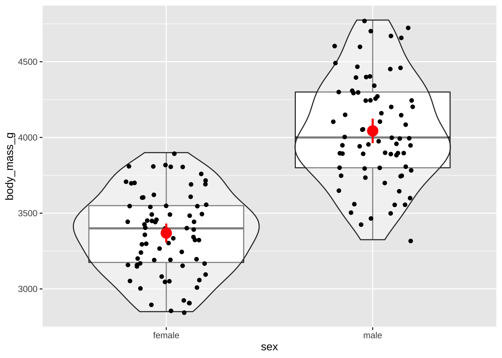

Untitled
Autor: Manuel Spínola
library(tidyverse)
library(rio)
library(collapse)
library(DescTools)
library(emmeans)
library(modelbased)
library(see)
library(parameters)ping <- import("03_datos/pinguinos.xlsx")ping$species <- factor(ping$species)
ping$sex <- factor(ping$sex)head(ping)## species island bill_length_mm bill_depth_mm flipper_length_mm body_mass_g
## 1 Adelie Torgersen 39.1 18.7 181 3750
## 2 Adelie Torgersen 39.5 17.4 186 3800
## 3 Adelie Torgersen 40.3 18.0 195 3250
## 4 Adelie Torgersen NA NA NA NA
## 5 Adelie Torgersen 36.7 19.3 193 3450
## 6 Adelie Torgersen 39.3 20.6 190 3650
## sex
## 1 male
## 2 female
## 3 female
## 4 <NA>
## 5 female
## 6 maleping <- na.omit(ping)adelie <- ping %>% filter(species == "Adelie")head(adelie)## species island bill_length_mm bill_depth_mm flipper_length_mm body_mass_g
## 1 Adelie Torgersen 39.1 18.7 181 3750
## 2 Adelie Torgersen 39.5 17.4 186 3800
## 3 Adelie Torgersen 40.3 18.0 195 3250
## 4 Adelie Torgersen 36.7 19.3 193 3450
## 5 Adelie Torgersen 39.3 20.6 190 3650
## 6 Adelie Torgersen 38.9 17.8 181 3625
## sex
## 1 male
## 2 female
## 3 female
## 4 female
## 5 male
## 6 femaleggplot(adelie, aes(sex, body_mass_g)) +
geom_boxplot() +
geom_violin(alpha = 0.4) +
geom_jitter(width = 0.2) +
stat_summary(fun.data = "mean_cl_normal", colour = "red", size = 1)
t.test(body_mass_g ~ sex, data = adelie, var.equal = TRUE)##
## Two Sample t-test
##
## data: body_mass_g by sex
## t = -13.126, df = 144, p-value < 2.2e-16
## alternative hypothesis: true difference in means is not equal to 0
## 95 percent confidence interval:
## -776.2484 -573.0666
## sample estimates:
## mean in group female mean in group male
## 3368.836 4043.493alfa = 0.05 P < 0.05
medias <- adelie %>%
group_by(sex) %>%
summarize(media = mean(body_mass_g))## `summarise()` ungrouping output (override with `.groups` argument)medias## # A tibble: 2 x 2
## sex media
## <fct> <dbl>
## 1 female 3369.
## 2 male 4043.MeanDiffCI(body_mass_g ~ sex, data = adelie)## meandiff lwr.ci upr.ci
## -674.6575 -776.3012 -573.0139male - female = 675 (IC 95% = 573 , 776)
mean(adelie$body_mass_g)## [1] 3706.164675/3706## [1] 0.1821371mod <- lm(body_mass_g ~ sex, data = adelie)summary(mod)##
## Call:
## lm(formula = body_mass_g ~ sex, data = adelie)
##
## Residuals:
## Min 1Q Median 3Q Max
## -718.49 -218.84 -18.84 225.00 731.51
##
## Coefficients:
## Estimate Std. Error t value Pr(>|t|)
## (Intercept) 3368.84 36.34 92.69 <2e-16 ***
## sexmale 674.66 51.40 13.13 <2e-16 ***
## ---
## Signif. codes: 0 '***' 0.001 '**' 0.01 '*' 0.05 '.' 0.1 ' ' 1
##
## Residual standard error: 310.5 on 144 degrees of freedom
## Multiple R-squared: 0.5447, Adjusted R-squared: 0.5416
## F-statistic: 172.3 on 1 and 144 DF, p-value: < 2.2e-16confint(mod)## 2.5 % 97.5 %
## (Intercept) 3297.0000 3440.6712
## sexmale 573.0666 776.2484medias <- estimate_means(mod, "sex")
medias## sex | Mean | SE | 95% CI
## ---------------------------------------------
## female | 3368.84 | 36.34 | [3297.00, 3440.67]
## male | 4043.49 | 36.34 | [3971.66, 4115.33]4043.49 - 3368.84 ## [1] 674.65contraste <- estimate_contrasts(mod, "sex")
contraste## Level1 | Level2 | Difference | SE | 95% CI | t | df | p | Difference (std.)
## -----------------------------------------------------------------------------------------------------
## female | male | -674.66 | 51.40 | [-776.25, -573.07] | -13.13 | 144 | < .001 | -1.47e <- emmeans(mod, "sex")e## sex emmean SE df lower.CL upper.CL
## female 3369 36.3 144 3297 3441
## male 4043 36.3 144 3972 4115
##
## Confidence level used: 0.95p <- pairs(e)p## contrast estimate SE df t.ratio p.value
## female - male -675 51.4 144 -13.126 <.0001confint(p)## contrast estimate SE df lower.CL upper.CL
## female - male -675 51.4 144 -776 -573
##
## Confidence level used: 0.95plot(p) + geom_vline(xintercept = 0)
LS0tCnRpdGxlOiAiVW50aXRsZWQiCmF1dGhvcjogIkF1dG9yOiBNYW51ZWwgU3DDrW5vbGEiCm91dHB1dDoKICBodG1sX2RvY3VtZW50OgogICAgdG9jOiB0cnVlCiAgICB0b2NfZGVwdGg6IDYKICAgIHRvY19mbG9hdDoKICAgICAgY29sbGFwc2VkOiBmYWxzZQogICAgY29kZV9kb3dubG9hZDogdHJ1ZQotLS0KCmBgYHtyLCBtZXNzYWdlPUZBTFNFLCB3YXJuaW5nPUZBTFNFfQpsaWJyYXJ5KHRpZHl2ZXJzZSkKbGlicmFyeShyaW8pCmxpYnJhcnkoY29sbGFwc2UpCmxpYnJhcnkoRGVzY1Rvb2xzKQpsaWJyYXJ5KGVtbWVhbnMpCmxpYnJhcnkobW9kZWxiYXNlZCkKbGlicmFyeShzZWUpCmxpYnJhcnkocGFyYW1ldGVycykKYGBgCgoKYGBge3J9CnBpbmcgPC0gaW1wb3J0KCIwM19kYXRvcy9waW5ndWlub3MueGxzeCIpCmBgYAoKCmBgYHtyfQpwaW5nJHNwZWNpZXMgPC0gZmFjdG9yKHBpbmckc3BlY2llcykKcGluZyRzZXggPC0gZmFjdG9yKHBpbmckc2V4KQpgYGAKCmBgYHtyfQpoZWFkKHBpbmcpCmBgYAoKYGBge3J9CnBpbmcgPC0gbmEub21pdChwaW5nKQpgYGAKCgpgYGB7cn0KYWRlbGllIDwtIHBpbmcgJT4lIGZpbHRlcihzcGVjaWVzID09ICJBZGVsaWUiKQpgYGAKCmBgYHtyfQpoZWFkKGFkZWxpZSkKYGBgCgoKYGBge3J9CmdncGxvdChhZGVsaWUsIGFlcyhzZXgsIGJvZHlfbWFzc19nKSkgKwogIGdlb21fYm94cGxvdCgpICsKICBnZW9tX3Zpb2xpbihhbHBoYSA9IDAuNCkgKwogIGdlb21faml0dGVyKHdpZHRoID0gMC4yKSArCiAgc3RhdF9zdW1tYXJ5KGZ1bi5kYXRhID0gIm1lYW5fY2xfbm9ybWFsIiwgY29sb3VyID0gInJlZCIsIHNpemUgPSAxKQpgYGAKCmBgYHtyfQp0LnRlc3QoYm9keV9tYXNzX2cgfiBzZXgsIGRhdGEgPSBhZGVsaWUsIHZhci5lcXVhbCA9IFRSVUUpCmBgYAoKYWxmYSA9IDAuMDUKUCA8IDAuMDUKCmBgYHtyfQptZWRpYXMgPC0gYWRlbGllICU+JQogIGdyb3VwX2J5KHNleCkgJT4lCiAgc3VtbWFyaXplKG1lZGlhID0gbWVhbihib2R5X21hc3NfZykpCmBgYAoKYGBge3J9Cm1lZGlhcwpgYGAKCgpgYGB7cn0KTWVhbkRpZmZDSShib2R5X21hc3NfZyB+IHNleCwgZGF0YSA9IGFkZWxpZSkKYGBgCm1hbGUgLSBmZW1hbGUgPSA2NzUgKElDIDk1JSA9IDU3MyAsIDc3NikKCmBgYHtyfQptZWFuKGFkZWxpZSRib2R5X21hc3NfZykKYGBgCgoKYGBge3J9CjY3NS8zNzA2CmBgYAoKYGBge3J9Cm1vZCA8LSBsbShib2R5X21hc3NfZyB+IHNleCwgZGF0YSA9IGFkZWxpZSkKYGBgCgpgYGB7cn0Kc3VtbWFyeShtb2QpCmBgYAoKYGBge3J9CmNvbmZpbnQobW9kKQpgYGAKCmBgYHtyfQptZWRpYXMgPC0gZXN0aW1hdGVfbWVhbnMobW9kLCAic2V4IikKbWVkaWFzCmBgYApgYGB7cn0KNDA0My40OSAtIDMzNjguODQgCmBgYAoKCmBgYHtyfQpjb250cmFzdGUgPC0gZXN0aW1hdGVfY29udHJhc3RzKG1vZCwgInNleCIpCmNvbnRyYXN0ZQpgYGAKCmBgYHtyfQplIDwtIGVtbWVhbnMobW9kLCAic2V4IikKYGBgCgpgYGB7cn0KZQpgYGAKCmBgYHtyfQpwIDwtIHBhaXJzKGUpCmBgYAoKYGBge3J9CnAKYGBgCmBgYHtyfQpjb25maW50KHApCmBgYAoKYGBge3J9CnBsb3QocCkgKyBnZW9tX3ZsaW5lKHhpbnRlcmNlcHQgPSAwKQpgYGAKCgoKCgoK